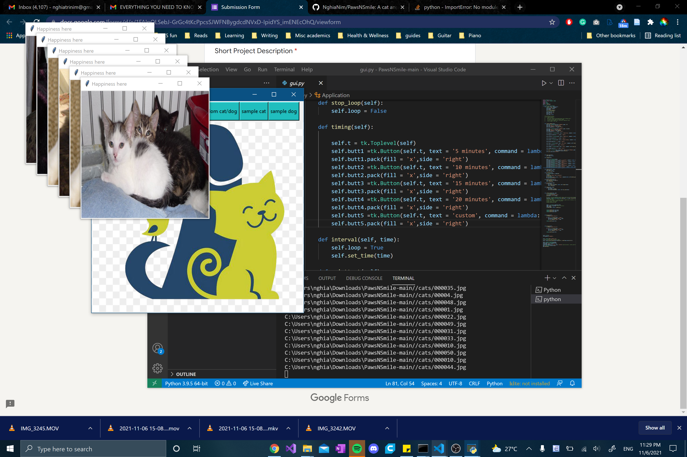
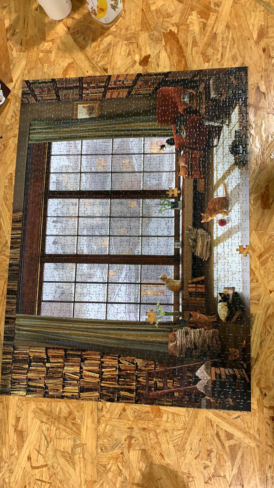
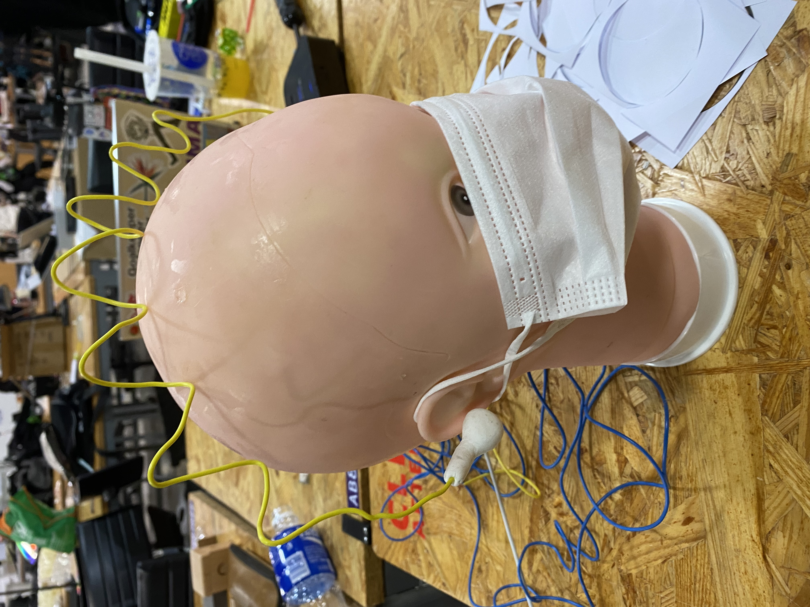

STUPID SHIT NO ONE NEEDS & TERRIBLE IDEAS HACKATHON SHANGHAI
The second stupid Hackathon Shanghai was held 6PM - 6AM, Nov 6th - 7th, 2021, at New York University Shanghai.
ABOUT:
STUPID SHIT NO ONE NEEDS & TERRIBLE IDEAS HACKATHON SHANGHAI is a hackathon event focusing on the generation of ideas and prototypes that are unusual, unnecessary, impractical, and/or stupid, using the tools and skills students have acquired through their coursework in Interactive Media Arts, Computer Science, or other majors at NYUSH.
Students attending the event will work individually or in teams of up to 4 over a period of 12 hours to generate such ideas, after which each group will present what they have come up with. The event will end with a celebration of the sheer amount of stupidity generated by the participants throughout the event.
Check the website for the previous stupid hackthon by clicking here.
Organised by Marcele, Steve Sun, Ken Wu, Elena Dagan, Joyce Zheng, Qingyu Peng, Tian Qin, Zhao Yang, Liuliu Zhu, Shengli Wen.
This is a time-zone friendly event, join us and win prizes from wherever you are !!!!!!!!!
Plenty of free food. Limited seats.
Poster designed by Shengli.
Hosted and sponsored by Office of Student Life and the department of Interactive Media Arts at NYU Shanghai. Special kudos to Marcela Godoy.
Shout out to Sam Lavigne and Amelia Winger-Bearskin who founded the original Stupid Hackathon at NYU ITP.
Categories:
Monetizing historical tragedies Jello prototyping Monetizing the dancing grandmas Reverse vacuum cleaners Samsung Galaxy 7 fires as an alternative energy source Masturbation to power life support machines Developing for Windows Mobile Automating book burning(Censorship Shmensorship) Smog machine for stage and theater Using the Great firewall beyond China(Mexican/American border?) A4-size toilet paper 3-D-printed paper Augmented reality for animals
Prizes
most stupid award most low-tech award most ugly award most not beautiful music award most sleepy award most i-want-to-poop award most make-people-laugh award ima-ghost-would-love-the-most award hightest blood pressure award most user-unfriendly award most spongebobsquarepants award most dangerous award most eye-catching award most energy comsumption award most 😅 award dog would love the most award kitty would love the most award the luckiest award the most unlucky award
Projects (2021):
Smart Drinking Machine by Zachary
Smart life~ Smart choice~ Smart guys use Smart Drinking Assistant~ A little bit of mechanism, Make your drinking experience interesting and FUCKING annoying! You’re welcome~

Auto More Sleep Machine by Yile Xu, Yanru Zhu
In our daily life, after the wake-up alarm, we always need to press the middle orange button to gain more sleep, this project helps us to automate this process.

Unusable Cup by Ryan, Chelsea, Joe, Santiago
A fancy cup with its handle inside.

The antisocial behavior nono machine by Yingfan Chen, Jae Gao, Ziyun Xu, Wentong Dou
The project is the device worn on the back to allow the user to overcome negativity throughout the day with the help of a certified technician:)

PawsNSmile by Nghia Nim, ChunTing Liu, Dhurba Tripathi, Ziyad Fawzy
The project is the device worn on the back to allow the user to overcome negativity throughout the day with the help of a certified technician:)Is life happening too quickly in a pandemic? Does everyday feel the same and time slowly reveals itself to be a social construct made to run a (dis)functional society? Is Zoom too tiring and thoughts of how an online video costs you $50k in tuition are making you rethink your life decisions? We can't fix any of those problems but here's some cute cats and dogs.

Puzzle by Hong Lai, Bella Pezzulli, Nina Ruffolo
We took 10 hours and three people to complete a puzzle that did not have all of its pieces.

Ahhhhh cockroach by Rachel, Scarlett, Annika, Vivian
A pet cockroach which can scream while chasing after you.

Slap to Voice Recognition by Safal Shrestha, Fatema Nassar
Using the force sensors, we created slap to speech program. We convert the slaps on the cheeks to morse code, and play a swear in a Russian accent (courtesy of our friend Alima). We display the swear on the screen as well. Words just don't work on some people, so we are trying to bridge this language barrier.

Good Fucking Uncommon Questions for Designer Couples by Yufeng Zhao
Good Fucking Uncommon Questions for Designer Couples is a set of 69 conversation starters for designer couples.. Each card will help you learn something new about design, your partner and yourself. Each question was designed to be not fun, confrontational, and very serious.
User-unfriendly game by Feiluan Feng, Xiangyue Zhang, Xinwei Xie
We design it and code it by JavaScript, and the main prompt is to make the project become more user-unfriendly, at least we did it in the first stage. The expection is to created something make people feel strange and maybe physical uncomfort.

HeadPods by Leslie Huang, E’jane Li and Shengli Wen
For when your AirPods are just too loose, too lonesome. Connect them better.

Save the Sproutworks by Jelena Xu, Cathy Luo, Kaylee Xu
A 'Smart' Sugar Adding Machine

Stupid milktea menu by Yanrui Shao, Yuanhe Guo, Weichen Liu
A fake app that helps milk tea lovers drink less milk tea.